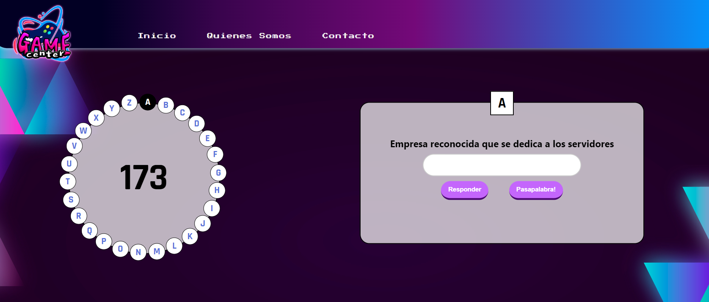

¡Bienvenido a Game Center!
TA-TE-TI

El tatetí es un juego de estrategia en el que dos jugadores compiten por completar una fila, columna o diagonal con sus fichas antes que su oponente. El tablero consta de una cuadrícula de 3x3 casillas. Uno de los jugadores utiliza fichas con una "X" y el otro con un círculo "O". Por turnos, los jugadores colocan sus fichas en una casilla vacía. El objetivo es alinear tres fichas propias en línea horizontal, vertical o diagonal. Si el tablero se llena sin que ningún jugador logre formar una línea de tres fichas, el juego termina en empate.
AHORCADO
El ahorcado es un juego en el que se elige una palabra secreta y otro jugador intenta adivinarla letra por letra. El objetivo es adivinarla antes de que se complete un dibujo del ahorcado. El jugador que elige la palabra secreta dibuja una serie de guiones para representar las letras de la palabra. El otro jugador sugiere letras una por una. Si una letra adivinada está en la palabra secreta, se revela en su posición; de lo contrario, se dibuja una parte del ahorcado. El juego continúa hasta que se adivine la palabra o se complete el dibujo del ahorcado.
PASAPALABRA
Al igual que en el programa de televisión, el juego incluye una ronda llamada "El Rosco". Aquí, los jugadores reciben una letra y una definición, y deben adivinar una palabra que comienza con esa letra en un tiempo limitado. Las respuestas correctas suman puntos. El juego Pasapalabra combina conocimientos generales con estrategia para moverse por el tablero y decidir cuándo responder preguntas. Es una opción divertida para desafiar el conocimiento y las habilidades lingüísticas de los jugadores, al igual que el programa de televisión.